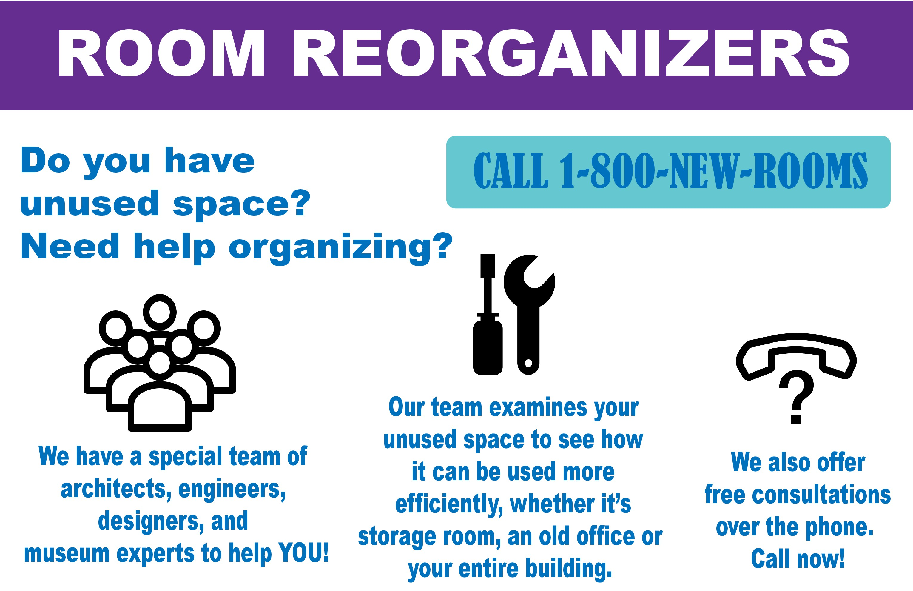
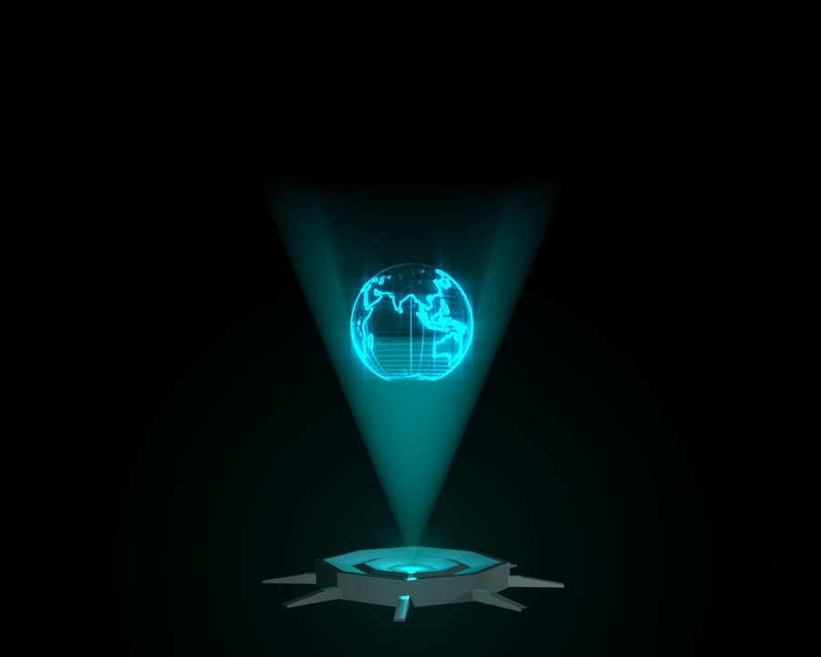

Before
I don't care about the reason -- I'm just going to build it because it is cool and fun, and because I simply enjoy the process. As long as something functions as I intended, I couldn't care less.
Studio 204 Museum Curators Team
"More For Your Tour"
UOCD Phase III : Get Ambitious Reflection
In the beginning of UOCD, I came in with skepticism and reluctance -- that it would just be
Products and Markets II. Great; we're about to repeat a semester of visiting random users,
striking awkward conversations, coming back with fruitless results and being overall frustrated
about ambiguities from instructors and disinterest from teammates. A semester warned me enough;
I was an engineer, not a designer.
Well, that wasn't exactly the case -- and if some of the future UOCD students are either coming in
with that presumed disappointment, or are confused at the beginning of taking UOCD, I'd like to tell
them that UOCD was, quite unexpectedly, one of the richest experiences I could have gotten in the
design space. Rather, it brought me back there: to think about why before how.
To give you a bit of context, I'm Jamie Cho, from Studio 204 Museum Curators Team,
Spring Semester
2017. We developed More for Your Tour, a context-aware system of public
reaction analysis
and speech feedback.
As engineers, we love building things, often for the sake of building. Often times, the
sake is no more than an excuse to do what we like doing; sometimes it doesn't even exist.
In short, we're okay with useless things. This is certainly the case for me, at least.
Some thing that is greatly emphasized at Olin, as opposed to any other engineering schools, is the
awareness for the human aspect of it, without merely focusing on the technical details.
Engineering is, after all, meant to enrich the lives of the people; it serves a
purpose.
Have a look at the following Promotion Video:
When you're finished, look at the comments. What do you see? Excitements about a promising new
product? Awe at the level
of elegancy and the intricate details of engineering and the fine, everlasting solution that it
provides? Not so much.
Why would this be? They seem to have taken so much time and effort machining a typically one-use
item, it sounds like an interesting idea, but somehow people scoff at the idea and deride it to be
useless.
Short answer: they are solving a problem that doesn't exist.
Developing ideas can be difficult. Initial ideation is usually (as it
should be) full of incredibly dumb and useless ideas. They get better through filtering, development
and distillation, but some of them escape the net and receive more attention than it perhaps
should.
One such example was a Room Reorganizer. I'd like to keep it short since I'd already
discussed this on the previous post if you had been following along.
In short, this was some variant on repurposing existing spaces to better fit the needs of curators
for their specific cause.

This seemed to be solving a problem that we'd noticed throughout our user visits: they're always
under space constraint, and often the kinds of space they need vary on a museum-to-museum basis.
A good warning call when you're about to fall to this trap is taking a look at the your set of
design principles.
As soon as you cannot find something that directly relate to the idea, or find yourself
rationalizing in order to adapt it for the idea, do yourself a favor and start reconsidering.
A better warning sign yet, which also happened for us, is when your user flatly tell you
that they don't need it and explain to you why -- which is why Collaborative
Design is so great! We were fortunate to have Dr.Casey express concerns about how viable this
would be -- i.e. while this may be a nuisance, this was not something that addressed something that
was core to their value.
In order words, Design Principles.
Throughout the semester, we investigated the users and concluded that something that they truly
appreciate is establishing connections with the audience. We went through quite a long way to tie
the space-related issues to our principles, but ultimately someone had to call it out: this was not
the right idea, and they didn't need it.
This is what Engineering with Design means : Any engineering solution ought to be
accompanied by its
supporting rationale for existence.
Let's shift our gears a bit. Some thing that the instructors kept reminding us is to think boldly and
care less about the implementation. Well, let me make a bold move and make a claim that might seem
contradictory to their teachings.
There is a reason that we're taking User-Oriented Collaborative Design at Olin
College of Engineering.
I don't know if you are familiar with the short film
"The Expert"
, but worry not, for here's a reminder:
The point is, designers can get so caught up with the issues that reality could be taken as
"negotiable". I claim that this is not why we take UOCD.
I don't know how convincing this might be, but here goes a more tangible example: we had quite a
heated debate about the form factor for our main display device. This was something that the
curators would use to provide augmented content, such as holograms of artifacts, audio clips, maps,
etc.

At the time of the discussion, there were two main candidates: a Robot that would
autonomously navigate the museum and follow the curator around (a dynamic solution), and a
Projector installed throughout the museum to transmit beams that would form
holograms at specific points in space (a
static solution).
Here's the issue that we faced: while the latter (projector) addressed the design principles better,
it came with a whole host of problems, such as not being scalable, large overhead for installation,
possible failure mode of being obstructed by the audience, etc. However, these points were
considered Implementation Details, which we could "ignore" for the sake of a "better idea."
On the other hand, the Robot Assistant seemed to suffer none of the previously mentioned problems,
except it would loosely violate one of our desing principles: not being obtrusive. Something that
would autonomously follow the curator around would definitely draw attention from the audience, as
well as get in the way of the tour. The metrics (as informed by our design principles)
said the Robot was the weaker idea, but the engineer in me was saying:
This is not why I'm here.
This is different from the Fanciful Horizon; If we were going to simply dream about things,
like a
projector that could penetrate through people, not be annoyingly bright and still be able to
transmit enough enegry to display the information, or an invisible robot that could materialize and
de-materialize at will, then we would be better fit for a novelist than either a designer or an
engineer.
The point here is that there are lots of engineers who fail to consider whys and equally as
many designers who fail to consider hows. I believe that the reason why I'm taking UOCD is
to be the interdisciplinary medium between the two: to be able to consider
both.
In the end, we ended up with a separate handheld device solely dedicated to the display portion of
the interaction. This way, we satisfied the requirements of both: being a reasonable, "tangible"
solution while retaining the why of its existence -- i.e. the design principles.
Since we had explored various frameworks throughout UOCD as a means to illustrate our intents, it is most fitting to do the same in an article that seeks to recapitulate my UOCD experience. Here, I'm going to illustrate this in a form of a Paradigm Shift that's happened to me.
I don't care about the reason -- I'm just going to build it because it is cool and fun, and because I simply enjoy the process. As long as something functions as I intended, I couldn't care less.
Building something is still fun, but it is even better if it is something meaningful. I consider the design aspects during my engineering tasks, and vice versa.